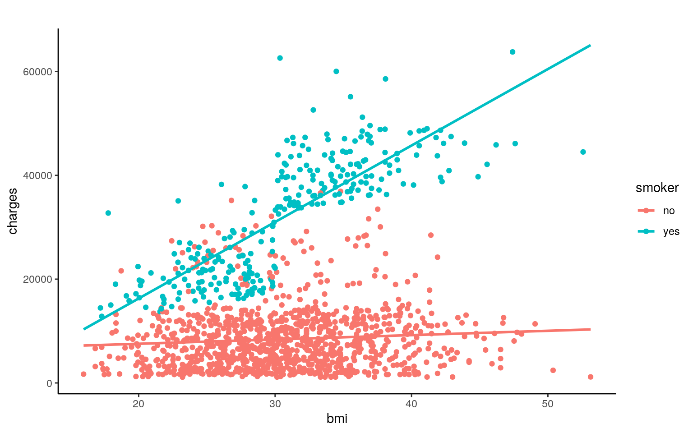

May 7, 2021
Introduction
From this last year being very focused on health-care, with COVID-19 affecting the world, I thought I would do a project focusing more on health insurance as it is something very important to have. Health-care in America is very costly which is made more affordable with health insurance, so I was interested to see whether the costs of insurance would be affected by different factors. The dataset “Insurance” data set on Medical costs from Kaggle.com contains information about Insurance charges, BMI, smoker, region, number of children, age, and sex. I was interested in observing the relationship of charges of Insurance and whether they would increase or decrease in relation to the following attributes of the insured: BMI and smoker, specifically.
library(ggplot2)
library(dplyr)
library(tidyverse)
library(tidyr)
library(lmtest)
library(sandwich)
Insurance <- read_csv("insurance (1).csv")
Insurance <- Insurance%>% na.omit()MANOVA
man <- manova(cbind(bmi, charges)~smoker, data=Insurance)
summary(man)## Df Pillai approx F num Df den Df Pr(>F)
## smoker 1 0.64394 1207.2 2 1335 < 2.2e-16 ***
## Residuals 1336
## ---
## Signif. codes: 0 '***' 0.001 '**' 0.01 '*' 0.05 '.' 0.1
' ' 1summary.aov(man)## Response bmi :
## Df Sum Sq Mean Sq F value Pr(>F)
## smoker 1 1 0.699 0.0188 0.891
## Residuals 1336 49720 37.215
##
## Response charges :
## Df Sum Sq Mean Sq F value Pr(>F)
## smoker 1 1.2152e+11 1.2152e+11 2177.6 < 2.2e-16 ***
## Residuals 1336 7.4554e+10 5.5804e+07
## ---
## Signif. codes: 0 '***' 0.001 '**' 0.01 '*' 0.05 '.' 0.1
' ' 1Insurance%>%group_by(smoker)%>%summarize(mean(bmi),mean(charges))## # A tibble: 2 x 3
## smoker `mean(bmi)` `mean(charges)`
## <chr> <dbl> <dbl>
## 1 no 30.7 8434.
## 2 yes 30.7 32050.pairwise.t.test(Insurance$bmi, Insurance$smoker,p.adj="none")##
## Pairwise comparisons using t tests with pooled SD
##
## data: Insurance$bmi and Insurance$smoker
##
## no
## yes 0.89
##
## P value adjustment method: nonepairwise.t.test(Insurance$charges, Insurance$smoker,p.adj="none")##
## Pairwise comparisons using t tests with pooled SD
##
## data: Insurance$charges and Insurance$smoker
##
## no
## yes <2e-16
##
## P value adjustment method: none1-0.95^9## [1] 0.3697506.05/9## [1] 0.005555556ggplot(Insurance, aes(x=age, y=bmi)) + geom_point(alpha = 0.5) + geom_density_2d(h=10) + coord_fixed() + facet_wrap(~smoker)A total of 15 tests were performed: 1 MANOVA, 2 ANOVAs, and 6 t-tests. The probability of at least one type I error is 1-0.95^15=0.3697506 with the Bonferroni correction (adjusted significance level) is a=.05/15=0.0056 The MANOVA assumptions shows the response for bmi is not significant as (p>0.05), but the response charges for charges is significant (p<0.05) and the multivariate normality showed homogenity from the graph.
Randomization Test
data<-Insurance%>% dplyr::select(smoker, charges, bmi)
data%>%group_by(smoker) %>% summarise(means= mean(charges)) %>% summarise(`mean_diff:`=diff(means)) %>% glimpse()## Rows: 1
## Columns: 1
## $ `mean_diff:` <dbl> 23615.96r_dist <- vector()
for(i in 1:5000){
new<-data.frame(smoker=sample(data$smoker), charges=data$charges)
r_dist[i]<-mean(new[new$smoker=="yes",]$charges)-
mean(new[new$smoker=="no",]$charges)}
mean(r_dist>23615.96)*2## [1] 0{hist(r_dist, main="Histogram of r_dist", ylab="Frequency", xlab="r_dist");
abline(v=23615.96, col="red")}The null hypothesis is there is no significant difference in BMI and charges between Smoker vs. Non-smoker. The alternative hypothesis is there is a significant difference in BMI and charges between Smoker vs. Non-smoker. When conducting a t-test, the p-value calculated is less than 0.05 (p=0<0.05) suggesting that Smoker and Non-smoker accounting for the variables, BMI and charges, are significant. We reject the null hypothesis concluding that there is a significant difference in BMI and charges between Smoker vs. Non-smoker. From the randomized distribution of the differences in mean, the mean difference value (mean_diff) is 23615.96 between the groups Smoker vs. Non-smoker.
Linear Regression Model
data$charges_c <- data$charges - mean(data$charges)
data$bmi_c <- data$bmi - mean(data$bmi)
fit <- lm(charges ~ bmi_c * smoker, data=data)
summary(fit)##
## Call:
## lm(formula = charges ~ bmi_c * smoker, data = data)
##
## Residuals:
## Min 1Q Median 3Q Max
## -19768.0 -4400.7 -869.5 2957.7 31055.9
##
## Coefficients:
## Estimate Std. Error t value Pr(>|t|)
## (Intercept) 8435.24 188.87 44.661 < 2e-16 ***
## bmi_c 83.35 31.27 2.666 0.00778 **
## smokeryes 23548.63 417.37 56.421 < 2e-16 ***
## bmi_c:smokeryes 1389.76 66.78 20.810 < 2e-16 ***
## ---
## Signif. codes: 0 '***' 0.001 '**' 0.01 '*' 0.05 '.' 0.1
' ' 1
##
## Residual standard error: 6161 on 1334 degrees of freedom
## Multiple R-squared: 0.7418, Adjusted R-squared: 0.7412
## F-statistic: 1277 on 3 and 1334 DF, p-value: < 2.2e-16ggplot(Insurance, aes(x=bmi, y=charges))+ geom_point(aes(color=smoker))+
geom_smooth(method="lm", se=F, fullrange=T, aes(color=smoker))+
ggtitle("")+ xlab("bmi")+ylab("charges")+theme_classic()
resids<-fit$residuals
fitvals<-fit$fitted.values
shapiro.test(resids)##
## Shapiro-Wilk normality test
##
## data: resids
## W = 0.91806, p-value < 2.2e-16bptest(fit)##
## studentized Breusch-Pagan test
##
## data: fit
## BP = 6.9014, df = 3, p-value = 0.07511ggplot()+geom_point(aes(fitvals,resids))+geom_hline(yintercept=0, color='red')ggplot()+geom_qq(aes(sample=resids))+geom_qq_line(aes(sample=resids))summary(fit)##
## Call:
## lm(formula = charges ~ bmi_c * smoker, data = data)
##
## Residuals:
## Min 1Q Median 3Q Max
## -19768.0 -4400.7 -869.5 2957.7 31055.9
##
## Coefficients:
## Estimate Std. Error t value Pr(>|t|)
## (Intercept) 8435.24 188.87 44.661 < 2e-16 ***
## bmi_c 83.35 31.27 2.666 0.00778 **
## smokeryes 23548.63 417.37 56.421 < 2e-16 ***
## bmi_c:smokeryes 1389.76 66.78 20.810 < 2e-16 ***
## ---
## Signif. codes: 0 '***' 0.001 '**' 0.01 '*' 0.05 '.' 0.1
' ' 1
##
## Residual standard error: 6161 on 1334 degrees of freedom
## Multiple R-squared: 0.7418, Adjusted R-squared: 0.7412
## F-statistic: 1277 on 3 and 1334 DF, p-value: < 2.2e-16coeftest(fit, vcov = vcovHC(fit))##
## t test of coefficients:
##
## Estimate Std. Error t value Pr(>|t|)
## (Intercept) 8435.235 183.360 46.0037 < 2.2e-16 ***
## bmi_c 83.351 28.610 2.9134 0.003635 **
## smokeryes 23548.630 453.102 51.9721 < 2.2e-16 ***
## bmi_c:smokeryes 1389.756 78.604 17.6806 < 2.2e-16 ***
## ---
## Signif. codes: 0 '***' 0.001 '**' 0.01 '*' 0.05 '.' 0.1
' ' 1summary(fit)$r.sq## [1] 0.741771fit2 <- lm(charges ~ bmi_c + smoker, data=data)
summary(fit2)##
## Call:
## lm(formula = charges ~ bmi_c + smoker, data = data)
##
## Residuals:
## Min 1Q Median 3Q Max
## -15992.7 -4600.2 -802.4 3636.2 30677.8
##
## Coefficients:
## Estimate Std. Error t value Pr(>|t|)
## (Intercept) 8438.77 217.29 38.84 <2e-16 ***
## bmi_c 388.02 31.79 12.21 <2e-16 ***
## smokeryes 23593.98 480.18 49.14 <2e-16 ***
## ---
## Signif. codes: 0 '***' 0.001 '**' 0.01 '*' 0.05 '.' 0.1
' ' 1
##
## Residual standard error: 7088 on 1335 degrees of freedom
## Multiple R-squared: 0.6579, Adjusted R-squared: 0.6574
## F-statistic: 1284 on 2 and 1335 DF, p-value: < 2.2e-16The coefficient estimates for BMI with being a smoker and the interaction between the two variables are 388.02 and 23593.98. This means that for 1 unit increase in BMI, every smoker would have charges of $23,593.98, while for 1 unit increase in BMI in non-smokers, the charges are $388.02. All assumptions of linearity, homoskedstacity, and normality are met. The Shapiro-Wilkes test resulted in a p-value greater than 0.05 which means that normality was met. The standard values (28.610 to 31.79 for non-smokers and 453.102 to 480.18 for smokers) and t-values changed (2.9134 to 12.21 for non-smokers and 51.9721 to 49.14 for smokers). The proportion of variance is 0.741771.
Bootstrapping
fit3 <- data
boot_fit1 <- sample_frac(fit3, replace = T)
samp_distn <- replicate(5000, {
boot_fit1 <- sample_frac(fit3, replace = TRUE)
fitnew <- lm(charges ~ smoker, data = boot_fit1)
coef(fitnew)
})
samp_distn %>% t %>% as.data.frame %>% summarize_all(sd)## (Intercept) smokeryes
## 1 183.093 729.6771fit4 <- lm(charges ~ smoker, data = fit3)
resids <- fit4$residuals
fitted <- fit4$fitted.values
resid_resamp <- replicate(5000, {
new_resids <- sample(resids, replace = TRUE)
fit3$new_charges <- fitted + new_resids
fit4 <- lm(new_charges ~ smoker, data = fit3)
coef(fit4)
})
resid_resamp %>% t %>% as.data.frame %>% summarize_all(sd)## (Intercept) smokeryes
## 1 225.2696 501.6437The standard error (504.6131) from the bootstrapped sample is lower than the original standard error and the robust standard errors (719.0902).
Logistic Regression Model (with binary variable)
data2<-data%>%mutate(smoker=ifelse(data$smoker=="yes",1,0))
fit5<-glm(smoker~charges+bmi,data=data2,family=binomial(link="logit"))
coeftest(fit5)##
## z test of coefficients:
##
## Estimate Std. Error z value Pr(>|z|)
## (Intercept) 9.6342e-01 6.7480e-01 1.4277 0.1534
## charges 3.1923e-04 2.1153e-05 15.0913 <2e-16 ***
## bmi -2.8312e-01 3.2181e-02 -8.7977 <2e-16 ***
## ---
## Signif. codes: 0 '***' 0.001 '**' 0.01 '*' 0.05 '.' 0.1
' ' 1exp(coeftest(fit5))##
## z test of coefficients:
##
## Estimate Std. Error z value Pr(>|z|)
## (Intercept) 2.62065 1.96363 4.1692e+00 1.166
## charges 1.00032 1.00002 3.5814e+06 1.000
## bmi 0.75343 1.03270 2.0000e-04 1.000data$predict<-predict(fit5, data=data, type = "response")
table(predict=as.numeric(data$predict>.5),truth=data$smoker)%>%addmargins## truth
## predict no yes Sum
## 0 1029 54 1083
## 1 35 220 255
## Sum 1064 274 1338(1029+220)/1338## [1] 0.93348281029/1064## [1] 0.9671053220/255## [1] 0.8627451220/274## [1] 0.8029197odds<-function(p)p/(1-p)
logit<-function(p)log(odds(p))
data$logit<-predict(fit5, type="link")
data%>%ggplot()+geom_density(aes(logit,color=smoker,fill=smoker), alpha=.4)+
theme(legend.position=c(.85,.85))+ggtitle("Density Plot of Smoker vs. Non-smoker") + geom_vline(xintercept=0)+xlab("logit")library(plotROC)
prob1 <- predict(fit5, type = "response")
ggplot(data,aes(charges, prob1,color=smoker))+geom_line()
ROCplot <- ggplot(data) + geom_roc(aes(d = smoker, m = prob1),
n.cuts = 0) + geom_segment(aes(x=0,y=0,xend=1,yend=1))
ROCplotcalc_auc(ROCplot)## PANEL group AUC
## 1 1 -1 0.9823229For every increase in charges, the odds of being a smoker increase by 1.00032 and for every increase in BMI, the odds of being a smoker increase by 0.75343. From the confusion matrix, the ACC/accuracy is (1029+220)/1338=0.9334828, the TNR/specificity is 1029/1064=0.9671053, the TPR/sensitivity is 220/274=0.8029197, and PPV/precision is 220/255=0.8627451. The AUC is 0.9823229 which means that the model is accurate.
class_diag<-function(probs,truth){
tab<-table(factor(probs>.5,levels=c("FALSE","TRUE")),truth)
acc=sum(diag(tab))/sum(tab)
sens=tab[2,2]/colSums(tab)[2]
spec=tab[1,1]/colSums(tab)[1]
ppv=tab[2,2]/rowSums(tab)[2]
if(is.numeric(truth)==FALSE & is.logical(truth)==FALSE) truth<-as.numeric(truth)-1
ord<-order(probs, decreasing=TRUE)
probs <- probs[ord]; truth <- truth[ord]
TPR=cumsum(truth)/max(1,sum(truth))
FPR=cumsum(!truth)/max(1,sum(!truth))
dup<-c(probs[-1]>=probs[-length(probs)], FALSE)
TPR<-c(0,TPR[!dup],1); FPR<-c(0,FPR[!dup],1)
n <- length(TPR)
auc<- sum( ((TPR[-1]+TPR[-n])/2) * (FPR[-1]-FPR[-n]) )
data.frame(acc,sens,spec,ppv,auc)
}
set.seed(1234)
k=10
data3<-data2[sample(nrow(data2)),]
folds<-cut(seq(1:nrow(data2)),breaks=k,labels=F)
diags<-NULL
for(i in 1:k){
train<-data3[folds!=i,]
test<-data3[folds==i,]
truth<-test$smoker
fit<-glm(smoker~charges+bmi, data=train, family=binomial(link="logit"))
probs<-predict(fit,newdata = test,type="response")
diags<-rbind(diags,class_diag(probs,truth))
}
apply(diags,2,mean)## acc sens spec ppv auc
## 0.9319661 0.8097611 0.9643649 0.8593115 0.9820508The ACC/accuracy is 0.9319661, the TNR/specificity is 0.9643649, the TPR/sensitivity is 0.8097611, and PPV/precision is 0.8593115. The AUC is 0.9820508 which is lower than the AUC from above (0.9823229). The model is a good indicator in classifying charges and BMI associated with smoking.
Logistic Regression Model (with more variables)
data3<-Insurance%>% dplyr::select(smoker, children, charges, region, age)
data4<-data3%>%mutate(smoker=ifelse(data$smoker=="yes",1,0))
log_reg <-glm(smoker~age+region+charges+children, data=data4, family = "binomial")
prob2 <- predict(log_reg)
coef(log_reg)## (Intercept) age regionnorthwest regionsoutheast
regionsouthwest charges
## -2.7800693716 -0.0867284626 -0.1523084707 0.0972169235
0.0091452946 0.0002976107
## children
## -0.1578010691exp(coef(log_reg))## (Intercept) age regionnorthwest regionsoutheast
regionsouthwest charges
## 0.0620342 0.9169260 0.8587233 1.1020994 1.0091872
1.0002977
## children
## 0.8540197data2$predict<- predict(log_reg, data=data3, type="response")
table(predict=as.numeric(data2$predict>0.5), truth=data2$smoker)%>% addmargins()## truth
## predict 0 1 Sum
## 0 1009 75 1084
## 1 55 199 254
## Sum 1064 274 1338(1009+199)/1338## [1] 0.90284011009/1064## [1] 0.9483083199/274## [1] 0.7262774199/254## [1] 0.7834646odds2<-function(p)p/(1-p)
logit2<-function(p)log(odds2(p))
data$logit2<-predict(log_reg, type="link")
data%>%ggplot()+geom_density(aes(logit2,color=smoker,fill=smoker), alpha=.4)+
theme(legend.position=c(.85,.85))+ggtitle("Density Plot of Smoker vs. Non-smoker") + geom_vline(xintercept=0)+xlab("logit")library(plotROC)
ggplot(data4,aes(region, prob2,color=smoker))+geom_line()ROCplot1 <- ggplot(data4) + geom_roc(aes(d = smoker, m = prob2),
n.cuts = 0) + geom_segment(aes(x=0,y=0,xend=1,yend=1))
ROCplot1calc_auc(ROCplot1)## PANEL group AUC
## 1 1 -1 0.9759155class_diag<-function(probs,truth){
tab<-table(factor(probs>.5,levels=c("FALSE","TRUE")),truth)
acc=sum(diag(tab))/sum(tab)
sens=tab[2,2]/colSums(tab)[2]
spec=tab[1,1]/colSums(tab)[1]
ppv=tab[2,2]/rowSums(tab)[2]
if(is.numeric(truth)==FALSE & is.logical(truth)==FALSE) truth<-as.numeric(truth)-1
ord<-order(probs, decreasing=TRUE)
probs <- probs[ord]; truth <- truth[ord]
TPR=cumsum(truth)/max(1,sum(truth))
FPR=cumsum(!truth)/max(1,sum(!truth))
dup<-c(probs[-1]>=probs[-length(probs)], FALSE)
TPR<-c(0,TPR[!dup],1); FPR<-c(0,FPR[!dup],1)
n <- length(TPR)
auc<- sum( ((TPR[-1]+TPR[-n])/2) * (FPR[-1]-FPR[-n]) )
data.frame(acc,sens,spec,ppv,auc)
}
truth = data3$smoker
class_diag(prob2, truth)## acc sens spec ppv auc
## yes 0.8908819 0.6094891 0.9633459 0.8106796 NAtable(prediction=as.numeric(prob2>.5), truth)%>% addmargins()## truth
## prediction no yes Sum
## 0 1025 107 1132
## 1 39 167 206
## Sum 1064 274 1338The in-sample classification diagnostics is Accuracy=(1009+199)/1338=0.9028401, Sensitivity=199/274=0.7262774, Specificity=1009/1064=0.9483083, Precision=199/254=0.7834646, and AUC=0.9759155. From the 10-fold CV with the same model, the out-of-sample classification diagnostics is Accuracy=0.8908819, Sensitivity=0.6094891, Specificity=0.9633459, Precision=0.8106796, and AUC=NA.
set.seed(1234)
k=10
data_cv<-data4[sample(nrow(data4)),]
folds<-cut(seq(1:nrow(data4)),breaks=k,labels=F)
diags<-NULL
for(i in 1:k){
train<-data_cv[folds!=i,]
test<-data_cv[folds==i,]
truth1<-test$smoker
fitcv1<-glm(smoker~age+region+charges+children, data=train, family=binomial(link="logit"))
probs_cv<-predict(fitcv1,newdata = test,type="response")
diags<-rbind(diags,class_diag(probs_cv,truth1))
}
summarize_all(diags,mean)## acc sens spec ppv auc
## 1 0.9028055 0.7308491 0.9473074 0.791651 0.9757563library(glmnet)
set.seed(1234)
y2<-as.matrix(data4$smoker)
x2<-model.matrix(smoker~age+region+charges+children,data=data4)[,-1]
head(x2)## age regionnorthwest regionsoutheast regionsouthwest
charges children
## 1 19 0 0 1 16884.924 0
## 2 18 0 1 0 1725.552 1
## 3 28 0 1 0 4449.462 3
## 4 33 1 0 0 21984.471 0
## 5 32 1 0 0 3866.855 0
## 6 31 0 1 0 3756.622 0x3<- scale(x2)
cv <- cv.glmnet(x3,y2, family="binomial")
lasso<-glmnet(x3,y2,family="binomial",lambda=cv$lambda.1se)
coef(lasso)## 7 x 1 sparse Matrix of class "dgCMatrix"
## s0
## (Intercept) -2.0424578
## age -0.5962969
## regionnorthwest .
## regionsoutheast .
## regionsouthwest .
## charges 2.5361417
## children .set.seed(1234)
k=10
data5<- data4%>% sample_frac
folds <- ntile(1:nrow(data5),n=10)
diags<-NULL
for(i in 1:k){
train<-data5[folds!=i,]
test<-data5[folds==i,]
truth <- test$smoker
fit6<-glm(smoker~age+region+charges+children, data=train, family="binomial")
probs3 <- predict(fit6, newdata=test, type="response")
yhat<-predict(fit6,newdata=test)
diags<-rbind(diags,class_diag(probs3,truth))
}
diags%>%summarize_all(mean)## acc sens spec ppv auc
## 1 0.9028448 0.7304451 0.947426 0.7904486 0.975649From LASSO, the variables charges and age are retained. This model had Accuracy=0.9028448, Sensitivity=0.7304451, Specificity=0.947426, Precision=0.7904486, and AUC=0.975649. The AUC here is slightly lower than the in-sample AUC. The AUC for out-of-sample did not have an AUC.